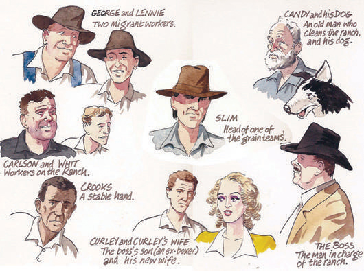

Of Mice and Men
John Steinbeck
Published 1937
Bantam Books
New York
A free E-text of the novel Of Mice and Men can be found
at:
http://www.readanybook.com/ebook/of-mice-and-men-242
Major Characters
George Milton
The protagonist and
main character of the book. He is a caring, compassionate, and
understanding human being who dreams of owning his own piece of
land " 'an live offa the fat of the land". Physically, he is a
small and intelligent man with strong features. He is Lennie's
cousin. He made a promise to Lennie's mother when she died to take
of Lennie.
Lennie Small
The obedient friend
of George. He has a child’s mind and a giant’s body. Ironically,
Lennie Small is a big, strong man. He is mentally retarded, and
relies upon George. It is these contrasting qualities and his
impulsive nature that cause him problems. Lennie is basically
harmless, but he does not understand his own strength. He loves to
pet soft things, like mice and puppies, but often kills them
accidently if they "nip" at him.
Old Candy
One of the lonely ranch
workers. He is a cripple (missing a hand), working as a ‘Swamper’.
Candy was injured working on the ranch years ago. The Boss has
taken care of Candy by giving him a job as a Swamper. He is
discriminated against because he is handicapped and now he is
getting old. Candy is worried he will lose his job and home when he
gets to old to work.
Crooks
A black ranch hand. He is
sensible and neat, with a mind of his own. He is a lonely
character, who is discriminated against, due to his race. However,
Crooks has a skill. He is knowledgeable about farm animals. Crooks
lives alone because he is Black. He does not live witht he other
ranch workers.
Slim
A ranch worker with
leadership qualities. He commands respect from all on the ranch. He
also has skills as the "mule skinner".
Curley
The boss’ son who was a
boxer. He is short, stocky, and thinks he is better than all the
others. He picks fights with everybody on the ranch. Curley is
short. He has a Napoleonic Complex because he is short, he is
always trying to prove himself by fighting with others.
Curley’s wife
The only woman on
the ranch. She is very flirtatious. Notice she does NOT have a name
other than Curley's wife. Woman are discriminated against at this
time in American history. She has no identity other than Curley's
Wife.
Carlson
A ranch worker. A brutal
man. He objects to Candy keeping his old dog.
Whit
A ranch worker. He is sent to
town to fetch the Sheriff after Curley’s wife is murdered.
The Boss
A ‘nice fella’ (in
Candy’s words). He is more concerned about his work on the ranch
than anyone else. He is fair. The Boss is respected because he is
rich.

CHAPTER 1 (pages 1-18) "Meeting George and
Lennie"
The purpose of chapter 1 is to introduce the setting of
the novel and the main characters George and
Lennie.
George and Lennie are on their way
to a ranch to get jobs. They stop near the Salinas River. They will
eat dinner and camp out by the river and go to the ranch the next
day.
The readers learn that George "takes care of Lennie" and
George is frustrated. Because George takes care of Lennie, he has
sacrificed his own life, dreams and any chance of
success.
Lennie is revealed to be a huge man, but he is
developmentally disabled. Lennie has a habit of carrying a mouse in
his pocket to pet it. When the mouse nips at Lennie's fingers, he
crushes its skull. George has to make Lennie throw the mouse
away.
It is revealed that George and Lennie had to sneak out
of the town of Weed because Lennie got in trouble when he tried to
"touch" a woman's dress. The dress was soft and Lennie wanted to
rub fabric in his hands.
George insists that Lennie remember this place by the
river in case he gets in trouble again. As Lennie and George fall
asleep they talk about their version of the American Dream, to own
their own ranch some day and live off the fat of the
land.
In chapter 1 the setting of the story is
revealed to the reader.
- The story takes place on a ranch in the Salinas River Valley in
California.
- The story takes place during the Great Depression.
- Many men are out of work and the farming industry in the
Midwestern United States is suffering.
- Men are working as migrant farm workers, traveling from farm to
farm looking for any kind of temporary work they can get.
George Milton
"was small and quick, dark of face, with restless eyes and
sharp, strong features. Every part of him was defined: small,
strong hands, slender arms, a thin and bony nose" (2).
Lennie Small (he is often described and compared to an
animal)
"Behind him walked his opposite, a huge man, shapeless of face,
with large pale eyes, with wide sloping shoulders; and he walked
heavily, dragging his feet a little, the way a bear drags his
paws. His arms did not swing at his sides, but hung
loosely...he drank from the surface of the green pool with long
gulps, snorting into the water like a horse" (2).
"Lennie dabbled his big paw in the water and wiggled
his fingers so water arose in little splashes (3).
"slowly like a terrier who doesn't want to bring a ball
to its master, Lennie approached, drew back, approached again"
(9)
Lennie is developmetally disabled.
"Lennie, who had been watching, imitated George exactly"
(4).
"George lay back on the sand and crossed his hands under his
head, and Lennie imitated him, raising his head to see whether he
were doing it right" (7).
"George?...Where we goin', George?'
'So you forgot that awready, did you? I gotta tell you again, do
I? Jesus Christ, you're a crazy bastard!'
'I forgot . I tried not to forget. Honest to God I did,
George...I remember about the rabbits, George" (4-5)
- is impulsive
- childlike
- does not know his own strength
- likes to pet soft things (mice, rabbits, puppies, soft
fabric)
- does not understand cause and effect (he keeps catching and
petting mice, when they bite he kills them, over and over
again)
- he does not understand the consequences of his own actions
George and Lennie are Different from the other Workers
"Guys like us, that work on ranches, are the loneliest guys in
the world. They got no family. They don’t belong no place. They
come to a ranch an' work up a stake and then they go inta a town
and blow their stake, and the first thing you know they're pounding
their tail on some other ranch. They ain't got nothing to look
ahead to . . . With us it ain’t like that. We got a future. We got
somebody to talk to that gives a damn about us. We don’t have to
sit in no bar room blowin’ in our jack jus’ because we got no place
else to go. If them other guys gets in jail they can rot for all
anybody gives a damn. But not us" (15).
Lennie and George's American Dream
"Someday--we're gonna get the jack together and we're gonna have
a little house and a couple of acres an' a cow and some pigs and--
an' live offa the fatta the lan', Lennie shouted. An' have rabbits.
Go on George! Tell about what we're gonna have in the garden and
about the rabbits in the cages and about the rain in the winter and
the stove, and how thick the cream is on the milk like you can
hardly cut it. Tell about that, George...Well, said George, we'll
have a big vegetable patch and a rabbit hutch and chickens. And
when it rains in the winter, we'll just say the hell with goin' to
work, and we'll build up a fire in the stove and set around it an'
listen to the rain comin' down on the roof...When we get the coupla
acres I can let you tend the rabbits all right...Let's have
different color rabbits, George. Sure we will. Red and blue and
green rabbits, Lennie. Millions of 'em. Furry ones, George, like I
seen in the fair in Sacremento. Sure furry ones. " (15-18).
CHAPTER 2 (pages 19-41) "George and Lennie arrive on the
ranch"
- The purpose of chapter 2 is to introduce the central
characters and conflicts of the story.
- Another purpose in this chapter is to inform the reader
that farm animals are not pets.
- Farm animals are a part of the economy.
- Animals are raised for food or work.
George and Lennie arrive at the ranch after the men have left to
work the morning shift.
They move into the bunk house and meet the boss, his son and the
workers on the ranch
It is revealed to the reader in Chapter 2 that ranch hands have
a very hard and difficult life.
- the bunk house has beds with thin, cheap mattresses
- the men have very few possessions
- the men have an old apple crate to store their little
belongings they own
- it is common for the bunkhouse to have lice and roaches
The Boss
- "a pretty nice fella"
- He gives the men a gallon of whiskey on Christmas
- He is annoyed that George and Lennie are late for work on the
ranch
- the boss is suspicious of George and Lennie's friendship
- the boss thinks that George might be taking advantage of Lennie
because he is "simple"
- George tells the boss that Lennie got kicked in the head by a
horse and he takes care of Lennie because they are cousins (not
true)
Candy
- "the old swamper"--the farm custodian, he cleans up around the
farm
- old and handicapped--he lost his hand in a farming accident
years ago
- best friend is his ancient dog, the dog cannot see and can
barely walk and smells
Curley
- the boss' son
- a boxer "Curley's pretty handy"
- Curley is short
- Curley wears boots with heels to set himself apart from the
other ranch hand and to make himself taller
- likes to prove himself by picking fights with bigger men "he
hates big guys"
- It is immediately apparent that Curley does not like Lennie
(because Lennie is a big man) and there will be trouble
- George and Lennie agree to stay away from Curley
- Curley just got married to " a tart"
- Curley wears a glove on his hand filled with Vaseline. He keeps
that hand soft to touch his wife
- Curley is very jealous and insecure
Curley's wife
- this character does not have a name
- women are not respected by society
- described as "a tart", "a bitch" and "poison"
- She is pretty
- flirts with the ranch hands
- Lennie develops an immediate crush on her
- George warns Lennie to stay away from Curley's wife
"Don't you even take a look at the bitch...I seen poison before,
but I never seen no piece of jail bait worse than her. You leave
her be" (35-36).
"Well, you keep away from her, 'cause she's a rat-trap in I ever
seen one" (36).
Slim
- the most respected worker on the ranch
- jerkline skinner
"he moved into the room, and he moved with a majesty only
achieved by royalty and master craftsmen. He was a jerkline
skinner, the prince of the ranch, capable of driving ten, sixteen,
even twenty mules with a single line to the leaders. He was capable
of killing a fly on the wheeler's butt with a bull whip without
touching the mule. There was a gravity in his manner and a quiet so
profound that all talk stopped when he spoke. His authority was so
great that his word was taken on any subject, be it politics or
love. This was Slim, the jerkline skinner" (37).
Carlson
- a ranch hand
- wants to shoot Candy's dog because he is old, disabled and
smells
- asks Slim if he would be willing to give Candy one of the new
pups
Farm animals are not Pets
" I been thinkin'. That dog of Candy's is so God damn old he
can't hardly walk. Stinks like hell, too. Ever' time he comes into
the bunk house I can smell him for two, three days. Why'n't you get
Candy to shoot his old dog and give him one of the pups to raise
up? I can smell that dog a mile away. Got no teeth, damn near
blind, can't eat. Candy feeds him milk. He can't chew nothing else"
(39).
"Meant to ask you, Slim, how's your bitch? I seen she wasn't
under your wagon this morning. "
"She slang her pups last night, " said Slim. "Nine of 'em. I
drowned four of 'em right off. She couldn't feed that many. "
"Got five left, huh?"
"Yeah, five. I kept the biggest" (39).
At the end of chapter 2, Lennie is as excited as a little child
about Slim's puppies. Lennie wants George to ask Slim if he can
have a brown and white puppy.
CHAPTER 3 (pages 42-72) "Candy's Dog and Curley's
Hand"
Chapter 3 is about relationships. The author's purpose
is to show how unusual George and Lennie's relationship is for this
time period.
- George and Lennie travel together and George takes care
of Lennie.
- George and Lennie have a plan for the future to get
their own farm.
- Candy's only true relationship is with his
dog.
- Curley's relationship with his wife is
troubled.
- Whit had a friendship with a ranch hand named Bill
Tenner and no one else can even remember the man.
- Men do not have loving relationships with women. They
have sexual relationships with prostitutes.
It is the end of the work day and the men return to the
bunkhouse.
George and Slim talk about Lennie
- strong
- dumb
- not crazy
- follows orders
"Say, you sure was right about him. Maybe he ain't bright, but I
never seen such a worker. He damn near killed his partner buckin'
barley. There ain't nobody can keep up with him. God awmighty I
never seen such a strong guy. " (43).
"George spoke proudly. "Jus' tell Lennie what to do an' he'll do
it if it don't take no figuring. He can't think of nothing to do
himself, but he sure can take orders... "He ain't no cuckoo, " said
George. "He's dumb as hell, but he ain't crazy" (43).
During the Great Depression it was very unusual for men to be
friends, travel together and look out for each other.
- George and Lennie go around together.
- George explains his unusual relationship with Lennie
- George and Lennie grew up in the same town. When Lennie's aunt
dies, George begins to take care of him.
"Funny how you an' him string along together...Hardly none of
the guys ever travel together. I hardly never seen two guys travel
together...Never seem to give a damn about nobody. It jus' seems
kinda funny a cuckoo like him and a smart little guy like you
travelin' together...
George said at last. "Him and me was both born in Auburn. I
knowed his Aunt Clara. She took him when he was a baby and raised
him up. When his Aunt Clara died, Lennie just come along with me
out workin'. Got kinda used to each other after a little while"
(44).
George explains to Slim that he used to make fun of Lennie's
disability but stopped because he almost killed Lennie.
Lennie trusts George completely.
"Funny, " said George. "I used to have a hell of a lot of fun
with 'im. Used to play jokes on 'im 'cause he was too dumb to take
care of 'imself. But he was too dumb even to know he had a joke
played on him. I had fun. Made me seem God damn smart alongside of
him...turns to Lennie and says, 'Jump in. ' An' he jumps. Couldn't
swim a stroke. He damn near drowned before we could get him. An' he
was so damn nice to me for pullin' him out. Clean forgot I told him
to jump in. Well, I ain't done nothing like that no more. "
Slim makes an observation that smart guys are not always nice
guys.
"Guy don't need no sense to be a nice fella. Seems to me
sometimes it jus' works the other way around. Take a real smart guy
and he ain't hardly ever a nice fella. (45).
George confides in Slim.
- George tells Slim how Lennie got in trouble in Weed because he
wanted to touch a woman's soft dress.
- Slim gives Lennie one of his puppies.
- Lennie tries to sneak the one-day old pup into the bunkhouse in
his shirt.
Carlson enters the bunkhouse and begins to complain about
Candy's dog.
- Carlson wants to kill the dog because he is crippled.
- Ironically, Candy is as old and crippled as his dog.
- Slim agrees with Carlson.
- Candy reluctantly agrees to let Carlson shoot his dog.
"I can't stand him in here, " said Carlson. "That stink hangs
around even after he's gone. " He walked over with his heavy-
legged stride and looked down at the dog. "Got no teeth, " he said.
"He's all stiff with rheumatism. He ain't no good to you, Candy.
An' he ain't no good to himself. Why'n't you shoot him,
Candy?...
"Look, Candy. This of dog jus' suffers hisself all the time. If
you was to take him out and shoot him right in the back of the
head-" he leaned over and pointed, "- right there, why he'd never
know what hit him...
Tell you what. I'll shoot him for you. Then it won't be you that
does it...
That dog ain't no good to himself. I wisht somebody'd shoot me
if I get old an' a cripple. " (49-50).
- Candy lies down in his bunk and faces the wall.
- It is silent in the bunkhouse as the men wait for Carlson to
kill Candy's dog and best friend.
"Candy looked a long time at Slim to try to find some reversal.
And Slim gave him none...Candy lay rigidly on his bed staring at
the ceiling...Slim said, 'Candy, you can have any one of thme pups
you want'...The silence was in the room again. A shot sounded in
the distance. The men looked quickly at the old man. Every head
turned toward him. For a moment he continued to stare at the
ceiling. Then he rolled slowly over and faced the wall and lay
silent (54).
During the Great Depression, friendships did not last. Men moved
on to new jobs frequently.
- One of the ranch hands Whit sees a letter from his friend Bill
Tenner in a magazine.
- Whit is very excited to see the letter. He feels "connected" to
Bill again.
- The other ranch hands barely remember Bill Tenner.
- This incident shows that migrant farm workers are very
lonely.
- This incident shows how unusual George and Lennie's friendship
is.
"Don't you remember Bill Tenner? Worked here about threee months
ago...
Bill and me worked in that patch of field peas. Run cultivators.
Bill was a hell of a nice fella" (51).
The men have a discussion about women.
- The men are afraid of Curley.
- They do not understand that Curley's wife is lonely living far
from town on a ranch with only men.
- Curley's wife is really just looking for some fiendship.
"Well, ain't she a looloo?
She ain't conealin' nothing. I never seen nobody like her. She
got the eye goin' all the time on everybody. I bet she even gives
the stable buck the eye. I don't know what the hell she
wants...
George said, 'She's gonna make a mess. They're gonna be a bad
mess about her. She's a jail bait all set on the trigger"
(56-57)
"What's eatin' on Curley?" Carlson squinted down the barrel of
his gun. "Lookin' for his old lady. I seen him going round and
round outside. " Whit said sarcastically, "He spends half his time
lookin' for her, and the rest of the time she's lookin' for him. "
Curley burst into the room excitedly. "Any you guys seen my
wife?"
"Curley's just spoilin' or he wouldn't start for Slim. An'
Curley's handy, God damn handy. Got in the finals for the Golden
Gloves. He got newspaper clippings about it. "
- The men talk about the whores in town.
- Women are not respected by men.
- Women are used for sex.
George sighed. "You give me a good whore house every time, " he
said. "A guy can go in an' get drunk and get ever'thing outa his
system all at once, an' no messes. And he knows how much it's gonna
set him back. These here jail baits is just set on the trigger of
the hoosegow. "
George and Lennie agree to let Candy be a part of their
dream
George and Lennie are talking about their dream and Candy
overhears them.
Candy who has saved up nearly $350 dollars convinces George and
Lennie to let him give them his money and Candy can go live with
them.
With Candy's money George realizes they will only need to work
another month on the ranch and they will have enough money to buy
the farm ($600).
"George, how long's it gonna be till we get that little place
an' live on the fatta the lan-an' rabbits?" "I don' know, " said
George. "We gotta get a big stake together. I know a little place
we can get cheap, but they ain't givin' it away. " Old Candy turned
slowly over. His eyes were wide open. He watched George
carefully...Candy said, "I ain't much good with on'y one hand. I
lost my hand right here on this ranch. That's why they give me a
job swampin'. An' they give me two hundred an' fifty dollars 'cause
I los' my hand An' I got fifty more saved up right in the bank,
right now. Tha's three hunderd, and I got fifty more comin' the end
a the month. Tell you what-" He leaned forward eagerly. "S'pose I
went in with you guys. Tha's three hunderd an' fifty bucks I'd put
in...Candy said miserably, "You seen what they done to my dog
tonight? They says he wasn't no good to himself nor nobody else.
When they can me here I wisht somebody'd shoot me. But they won't
do nothing like that. I won't have no place to go, an' I can't get
no more jobs...George stood up. "We'll do her, " he said. "We'll
fix up that little old place an' we'll go live there. " He sat down
again. They all sat still, all bemused by the beauty of the thing,
each mind was popped into the future when this lovely thing should
come about" (62-67).
Curley fights with Lennie
- Slim leaves the bunkhouse with Crooks, the "Negro stable buck",
to fix a mule's foot.
- Curley thinks that his wife and Slim are fooling around.
- Curley and Slim get into a verbal argument about Curley's
wife.
- The men tease Curley.
- Curley is angry and ready for a fight.
- Curley will not fight with Slim because Slim is needed on the
ranch and respected by all the ranch hands.
- Curley notices Lennie lying on his bunk smiling (about his
puppy and the rabbits)
- Curley picks a fight with Lennie.
- Lennie does not fight back until George tells him to.
- Upon George's order Lennie fights back.
- Lennie crushes all the bones in Curley's hand with his
fist.
- George and Lennie are afraid they will be fired because Lennie
has crushed Curley's hand and Curley is the boss' son.
- Slim threatens Curley.
- Curley agrees to say his hand was crushed in a farm
machine.
- Lennie who does not understand his own strength is not worried
that he hurt Curley.
- Lennie is only worried that George will be mad at him and
George will not let him tend the rabbits.
"His eyes slipped on past and lighted on Lennie; and Lennie was
still smiling with delight at the memory of the ranch. Curley
stepped over to Lennie like a terrier. "What the hell you laughin'
at?" Lennie looked blankly at him. "Huh?" Then Curley's rage
exploded. "Come on, ya big bastard. Get up on your feet. No big
son-of-a-bitch is gonna laugh at me...
He slashed at Lennie with his left, and then smashed down his
nose with a right. Lennie gave a cry of terror...Lennie covered his
face with his huge paws and bleated with terror. He cried, "Make
'um stop, George.'...
George was on his feet yelling, "Get him, Lennie. Don't let him
do it...
Curley's fist was swinging when Lennie reached for it. The next
minute Curley was flopping like a fish on a line, and his closed
fist was lost in Lennie's big hand...Curley sat down on the floor,
looking in wonder at his crushed hand...
George said, "Slim, will we get canned now? We need the stake.
Will Curley's old man can us now?" Slim smiled wryly...Slim went
on. "I think you got your han' caught in a machine. If you don't
tell nobody what happened, we ain't going to. But you jus' tell an'
try to get this guy canned and we'll tell ever'body, an' then will
you get' the laugh. "
"I won't tell, " said Curley...
"I can still tend the rabbits, George?"
"Sure. You ain't done nothing wrong. "
"I di'n't mean no harm, George. "
(68-72).
CHAPTER 4 (pages 73-91) "The Lonely Ones"
- Chapter 4 is about discrimination and
loneliness.
- On the ranch and all of the ranch hands have gone to
town to the whore houses to drink, play cards and have
sex.
- Lennie, Candy, Crooks and Curley's Wife are not invited
to go because they are discriminated against due to their age,
disability, race or gender.
- Lennie is lonely and goes to the barn to pet his
puppy.
- Lennie sees Crooks' light on inhis room and goes to
visit Crooks.
"the Negro stable buck, had his
bunk in the harness room...his bunk was a long box filled with
straw...And scattered about the floor were a number of personal
possessions; for, being alone, Crooks could leave his things about,
and being a stable buck and a cripple, he was more permanent than
the other men, and he had accumulated more possessions than he
could carry on his back...And he had books, too; a tattered
dictionary and a mauled copy of the California civil code for
1905...This room was swept and fairly neat, for Crooks was a proud,
aloof man. He kept his distance and demanded that other people keep
theirs. His body was bent over to the left by his crooked
spine...(73-74).
- Crooks does not want Lennie is his room, but cannot
resist Lennie friendliness and allows him in the
room.
"You got no right to come in my room.
This here's my room. Nobody got any right in here but me...I ain't
wanted in the bunk house, and you ain't wanted in my room. " "Why
ain't you wanted?" Lennie asked. "'Cause I'm black. They play cards
in there, but I can't play because I'm black. They say I stink.
Well, I tell you, you all of you stink to me...Lennie's disarming
smile defeated him..If I say something, why it's just a nigger
sayin' it" (75-76).
- Crooks is very lonely, no one on the ranch talks to him
because he is Black.
- Crooks resents Lennie because even though Lennie is
mentally disabled, he is white and has a
friend."Crooks said gently, "Maybe you can
see now. You got George. You know he's goin' to come back. S'pose
you didn't have nobody. S'pose you couldn't go into the bunk house
and play rummy 'cause you was black. How'd you like that?
S'pose you had to sit out here an' read books. Sure you could play
horseshoes till it got dark, but then you got to read books. Books
ain't no good. A guy needs somebody -to be near him. " He whined,
"A guy goes nuts if he ain't got nobody. Don't make no difference
who the guy is, long's he's with you. I tell ya, " he cried, "I
tell ya a guy gets too lonely an' he gets sick"
(80).
- Crooks begins to tease Lennie that George will leave
him.
"George can tell you screwy things, and it
don't matter. It's just the talking. It's just bein' with another
guy. That's all. " He paused. His voice grew soft and persuasive.
"S'pose George don't come back no more. S'pose he took a powder and
just ain't coming back. What'll you do then?"
(78).
- Because Lennie gets scared that George is hurt and will
not come back to the ranch, Crooks finally stops teasing
him.
- Candy comes to Crooks' room looking for
Lennie.
- Even though Candy and Crooks have both lived on the
ranch for years, Candy has never been in Crooks' room, because he
is Black.
Candy leaned against the wall beside
the broken collar while he scratched the wrist stump. "I been here
a long time, " he said. "An' Crooks been here a long time. This's
the first time I ever been in his room. " Crooks said darkly, "Guys
don't come into a colored man's room very much"
(82).
- Candy and Lennie begin talking about their dream of
owning their own place.
- At first Crooks tells them that their dream of owning
land will never come true."You're nuts. " Crooks
was scornful. "I seen hunderds of men come by on the road an' on
the ranches, with their bindles on their back an' that same damn
thing in their heads. Hunderds of them. They come, an' they quit
an' go on; an' every damn one of 'em's got a little piece of land
in his head. An' never a God damn one of 'em ever gets it. Just
like heaven. Everybody wants a little piece of lan'. I read plenty
of books out here. Nobody never gets to heaven, and nobody gets no
land. It's just in their head. They're all the time talkin' about
it, but it's jus' in their head" (81).
- Crooks is eventually convinced that George, Lennie and
Candy have enough money to get their own place, and offers to come
work for them for room and board, no wages."If you
. . . . Guys would want a hand to work for nothing-just his keep,
why I'd come an' lend a hand. I ain't so crippled I can't work like
a son-of-a-bitch if I want to" (84).
- Curley's wife has been left alone at the ranch house,
she goes to barn looking for someone to talk
to.
"She regarded them amusedly. "Funny thing,
" she said. "If I catch any one man, and he's alone, I get along
fine with him. But just let two of the guys get together an' you
won't talk. Jus' nothing but mad" She dropped her fingers and put
her hands on her hips. "You're all scared of each other, that's
what. Ever' one of you's scared the rest is goin' to get something
on you. " After a pause Crooks said, "Maybe you better go along to
your own house now. We don't want no trouble. " "Well, I ain't
giving you no trouble. Think I don't like to talk to somebody ever'
once in a while? Think I like to stick in that house afla time?"
(85).
- The men are afraid to get in trouble and want
Curley's wife to leave the barn.
- Curley's Wife is lonely and she gets angry that the men
won't talk to her, she bullies them and threathens to accuse Crooks
of rape.
"Listen, Nigger, " she said. "You know
what I can do to you if you open. Your trap?" Crooks stared
hopelessly at her, and then he sat down on his bunk and drew into
himself. She closed on him. "You know what I could do?" Crooks
seemed to grow smaller, and he pressed? himself against the wall.
"Yes, ma'am. " "Well, you keep your place then, Nigger. I could get
you strung up on a tree so easy it ain't even funny"
(89).
- At the end of the chapter, Crooks realizes the dream
will never come true because he is Black and he withdraws his offer
to join George, Lennie and Candy.
"Listen,
Nigger, " she said. "You know what I can do to you if you open.
Your trap?" Crooks stared hopelessly at her, and then he sat down
on his bunk and drew into himself. She closed on him. "You know
what I could do?" Crooks seemed to grow smaller, and he pressed?
himself against the wall. "Yes, ma'am. " "Well, you keep your place
then, Nigger. I could get you strung up on a tree so easy it ain't
even funny" (91).
CHAPTER 5 (pages 92-108)
"Broken Dreams and Broken Necks"
- Chapter 5 is about broken dreams.
- In this chapter Lennie kills his puppy and Curley's
Wife.
- Curley's Wife had a dream to be an actress, when her
dream is broken she married Curley.
- Lennie kills his puppy and Curley's Wife. The dream to
"live offa' the fatta' the land" comes to an
end.
- Sunday afternoon on the ranch and all of the men are
playing in a horseshoes tournament, except Lennie.
- Lennie is in the barn. He is staring at his dead pup,
its neck is broken.
Only Lennie was in the barn, and Lennie sat in the hay
beside a packing case under a manger in the end of the barn that
had not been filled with hay. Lennie sat in the hay and looked at a
little dead puppy that lay in front of him. Lennie looked at it for
a long time, and then he put out his huge hand and stroked it,
stroked it clear from one end to the other. And Lennie said softly
to the puppy, "Why do you got to get killed? You ain't so little as
mice. I didn't bounce you hard. " He bent the pup's head up and
looked in its face, and he said to it, "Now maybe George ain't
gonna let me tend no rabbits, if he fin's out you got killed"
(92).
- Lennie gets very angry and throws the dead puppy across
the barn
"Suddenly his anger arose. "God damn you, " he cried. "Why
do you got to get killed? You ain't so little as mice. " He picked
up the pup and hurled it from him. He turned his back on it. He sat
bent over his knees and he whispered, "Now I won't get to tend the
rabbits. Now he won't let me. " He rocked himself back and forth in
his sorrow" (93).
- Curley's Wife is lonely and looking for someone to talk
to and she finds Lennie.
- Lennie is scared he will get in trouble for talking to
her.
- Curley's Wife is upset, because no one will talk to
her.
Why can't I talk to you? I never get to
talk to nobody. I get awful lonely. " Lennie said, "Well, I ain't
supposed to talk to you or nothing. " "I get lonely, " she said.
"You can talk to people, but I can't talk to nobody but Curley"
(95).
- Curley's wife tries to console Lennie about the dedad
puppy.
- Ironically, she is unconcerned about the dead dog
because it is just another mutt.
"She consoled
him. "Don't you worry none. He was jus' a mutt. You can get another
one easy. The whole country is fulla mutts"
(95).
- She tells Lennie about her dream to go to
Hollywood.
- When her dream was broken, by her mother, she leaves
home and marries Curley.
Seems like they ain't
none of them cares how I gotta live. I tell you I ain't used to
livin' like this. I coulda made somethin' of myself. " She said
darkly, "Maybe I will yet...Well, a show come through, an' I met
one of the actors. He says I could go with that show. But my of
lady- wouldn' let me. She says because I was on'y fifteen...I
wasn't gonna stay no place where I couldn't get nowhere or make
something of myself..."Well, I ain't told this to nobody before.
Maybe I ought'n to. I don'like Curley. He ain't a nice fella"
(96-97).
- While Lennie and Curley's wife are talking, she allows
Lennie to stroke her soft hair.
- Lennie gets rough, Curley's wife gets scared and asks
him to stop, Lennie gets scared and accidentally snaps her
neck.
Curley's wife moved away from him a
little. "I think you're nuts, " she said. "No I ain't, " Lennie
explained earnestly. "George says I ain't. I like to pet nice
things with my fingers, sof' things. " She was a little bit
reassured. "Well, who don't?" she said. "Ever'body likes that...But
mine is soft and fine. 'Course I brush it a lot. That makes it
fine. Here-feel right here. " She took Lennie's hand and put it on
her head. "Feel right aroun' there an' see how soft it is. "
Lennie's big fingers fell to stroking her hair. "Don't you muss it
up, " she said. Lennie said, "Oh! That's nice, " and he stroked
harder...And then she cried angrily, "You stop it now, you'll mess
it all up. " She jerked her head sideways, and Lennie's fingers
closed on her hair and hung on. "Let go, " she cried. "You let go!"
Lennie was in a panic. His face was contorted. She screamed then,
and Lennie's other hand closed over her mouth and nose. "Please
don't, " he begged. "Oh! Please don't do that. George'll be mad.
"He shook her then, and he was angry with her. "Don't you go
yellin', " he said, and he shook her; and her body flopped like a
fish. And then she was still, for Lennie had broken her neck"
(98-100).
- After Lennie kills Curley's wife he is concerned that
George will be mad and that he won't get to tend the
rabbits.
- Lennie runs away, and goes to hide in the brush until
George comes for him.
"I done a real bad
thing, " he said. "I shouldn't of did that. George'll be mad. An' .
. . . He said . . . . An' hide in the brush till he come. He's
gonna be mad. In the brush till he come. Tha's what he said"
(100).
- Curley's Wife body lies alone in the barn.
"Curley's wife lay with a half-covering of yellow hay. And
the meanness and the plannings and the discontent and the ache for
attention were all gone from her face. She was very pretty and
simple, and her face was sweet and young" (101).
- Candy discovers her body and goes to get
George.
- They realize Lennie must have killed her by accident,
but they know Lennie is dangerous none the less.
- George asks Candy to him a few moments to get away from
the barn before he tells the other men that Curley's Wife is dead.
George doesn't want the other men to think he was involved in
curley's Wife's death. George sneaks into the bunkhouse and comes
out with his coat on. "Now you listen. The guys
might think I was in on it. I'm gonna go in the bunk house. Then in
a minute you come out and tell the guys about her, and I'll come
along and make like I never seen her. Will you do that? So the guys
won't think I was in on it?...George had put on his blue denim coat
and buttoned it, and his black hat was pulled down low over his
eyes" (105).
- Candy and George realize their dream of owning
their own land has ended.
Now Candy spoke his greatest fear. "You an' me can get that
little place, can't we, George? You an' me can go there an' live
nice, can't we, George? Can't we?" Before George answered, Candy
dropped his head and looked down at the hay. He knew. George said
softly, "-I think I knowed from the very first I think I
knowed we'd never do her. He usta like to hear about it so much I
got to thinking maybe we would. " "Then-it's all off?" Candy said
sulkily" (104).
- As the chapter ends, Curley and the other men are
getting together to go look for Lennie. Curley wants to shoot
Lennie and George is trying to convince him to bring him to
jail.
- Carlson notices that his gun is missing, the men assume
that Lennie has the gun and is dangerous.
"There was a rise of voices in question, a drum of running
feet and the men burst into the barn. Slim and Carlson and young
Whit and Curley, and Crooks keeping back out of attention range.
Candy came after them, and last of all came George. George had put
on his blue denim coat and buttoned it, and his black hat was
pulled down low over his eyes. The men raced around the last stall.
Their eyes found Curley's wife in the gloom, they stopped and stood
still and looked...Curley came suddenly to life. "I know who done
it, " he cried. "That big son-of-a-bitch done it. I know he done
it...He worked himself into a fury. "I'm gonna get him. I'm going
for my shotgun. I'll kill the big son-of-a-bitch myself. I'll shoot
'im in the guts....Slim sighed. "Well, I guess we got to get him.
Where you think he might of went?" It seemed to take George some
time to free his words. "He-would of went south, " he said. "We
come from north so he would of went south. " Carlson came
running in, "The bastard's stole my Luger, " he shouted. "It ain't
in my bag" (103-107).
Chapter 6 (Pages 108-118) "Tell How It's Gonna
Be"
The novel Of Mice and Men has a circular plot
line
In Chapter 6 the story has come full circle. Lennie and George have
returned to the banks of the Salinas River.
- When Lennie first gets to the river he is proud of
himself for remembering George's instructions.
- Lennie has 2 hallucinations at the river.
- In the first hallucination he sees his Aunt Clara, who
chastises him for not listening to George and getting in
trouble.
- "And then from out of Lennie's head there came a little
fat old woman. She wore thick bull's-eye glasses and she wore a
huge gingham apron with pockets, and she was starched and clean.
She stood in front of Lennie and put her hands on her hips, and she
frowned disapprovingly at him. And when she spoke, it was in
Lennie's voice. .. "You never give a thought to George, " she went
on in Lennie's voice. "He been doin' nice things for you alla time.
When he got a piece of pie you always got half or more'n half. An'
if they was any ketchup, why he'd give it all to you. " "I know, "
said Lennie miserably. "I tried, Aunt Clara, ma'am. I tried and
tried" (98).
- The the second hallucination, a huge rabbit chastises
Lennie and tells him that George is angry and will beat
him.
- "Aunt Clara was gone, and from out of Lennie's head
there came a gigantic rabbit... If you think George gonna let you
tend rabbits, you're even crazier'n usual. He ain't. He's gonna
bear hell outa you with a stick, that's what he's gonna do"
(99).
- Both hallucinations show Lennie's childlike level of
intelligence.
- He feels bad, because he was bad, not because he killed
Curley's Wife.
- Lennie asks George to tell him the story of their dream
again.
- George sits just behind Lennie and "tells how it's
gonna be"
- George makes Lennie happy talking about their farm and
the rabbits.
- As George tells the story, Curley and the other men can
be heard getting closer.
"George had been listening to the distant sounds. For a
moment he was business-like. "Look acrost the river, Lennie, an'
I'll tell you so you can almost see it. " Lennie turned his head
and looked off across the pool and up the darkening slopes of the
Gabilans. "We gonna get a little place, " George began. He reached
in his side pocket and brought out Carlson's Luger; he snapped off
the safety, and the hand and gun lay on the ground behind Lennie's
back. He looked at the back of Lennie's head, at the place where
the spine and skull were joined. A man's voice called from up the
river, and an-other man answered. "Go on, " said Lennie. George
raised the gun and his hands shook, and he dropped his hand to the
ground again" (103).
- George realizes he cannot take care of Lennie anymore.
He cannot protect Lennie.
- Curley is planning on shooting Lennie in the gut, so
Lennie will die slowly and painfully.
- If Lennie goes to jail he will be locked up like an
animal and he will suffer as well.
- George takes Carlson's gun out of his pocket and shoots
Lennie.
- George feels the only way he can help Lennie or protect
him is a mercy killing. George kills Lennie quickly and painlessly
to prevent suffering.
"Lennie said, "I thought you was mad at me, George. "
"No, " said George. "No, Lennie. I ain't mad. I never been mad, an'
I ain't now. That's a thing I want ya to know. " The voices came
close now. George raised the gun and listened to the voices. Lennie
begged, "Le's do it now. Le's get that place now. " "Sure, right
now. I gotta. We gotta. " And George raised the gun and steadied
it, and he brought the muzzle of it close to the back of Lennie's
head. The hand shook violently, but his face set and his hand
steadied. He pulled the trigger. The crash of the shot rolled up
the hills and rolled down again" (104).
- The other men arrive at the river.
- Only Slim figures out what George has done. Slim
understands that George killed Lennie because he was his
friend.
"Slim came directly to George and sat down beside
him, sat very close to him. "Never you mind, " said Slim. "A guy
got to sometimes" (105).